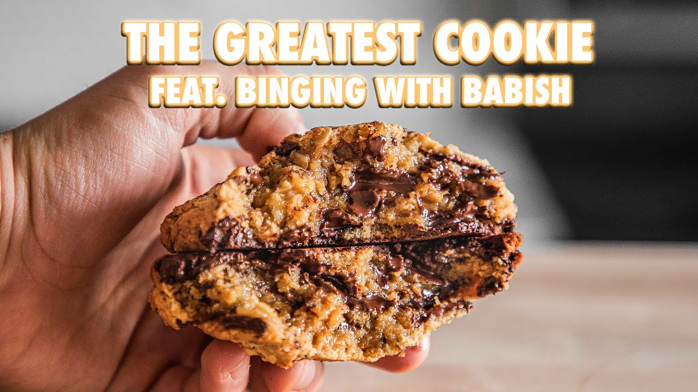

Joshua Weissman's Take on Levain Chocolate Chip Cookie Recipe

This is famous YouTuber, Joshua Weissman's, best attempt at recreating one of the best
chocolate chip cookies. This chocolate chip cookie is crispy on the outside with a
thick and gooey center. Every bite is packed with semi-sweet chocolate ships
with chunks of walnuts.
- 1.25 cups (280g) unsalted butter
- 1 lb (450g) roughly chopped dark chocolate, about 60-70% cacao
- 1.5 cups (230g) cake flour
- 2 cups (275g) all-purpose flour
- 1.5 tsp (5g) kosher salt
- 2 tsp (8g) cornstarch
- 1/2 tsp (6g) baking soda
- 1.25 cups (285g) light brown sugar
- 1/2 cup (115g) granulated sugar
- 2 large eggs
- 3 large egg yolks
- 2 cups (165g) roughly chopped, toasted walnuts
- In a medium saucepan, melt the butter and then set aside to cool.
- In a medium bowl, whisk together the flours, salt, cornstarch, and baking soda. Set aside.
- Using a stand mixer fitted with the whisk attachment, add the light brown sugar and granulated sugar. Whisk
together on medium speed until combined and then slowly stream in the butter. Continue to whisk until the
mixture is creamy.
- Next, add in the eggs one at a time followed by the egg yolks, making sure to mix each egg fully into the
batter before adding the next.
- Once smooth, switch to the paddle attachment and mix in the flour mixture until smooth.
- Turn the machine off and fold in the walnuts and chocolate until combined.
- Place the batter in a bowl, cover, and refrigerate for at least 45 minutes to chill completely.
- Preheat the oven to 425°F (220°C).
- Divide the dough into 6 ounce pieces. Roll each piece into a tightly packed ball, it should be tall. (I used
a Vollrath 4 ounce stainless steel disher to form my cookies. Make sure to pack the disher tightly with
dough).
- Place 4 cookies on a parchment lined baking sheet. Repeat with the remaining dough. For best results,
refrigerate the cookies again for 25 minutes.
- Bake for 10-13 minutes, or until lightly browned on the outside and slightly underdone on the inside.
- Set on a wire rack to cool slightly before serving.